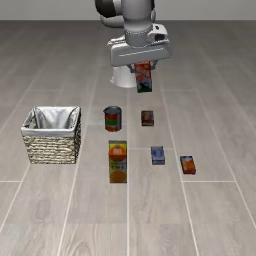
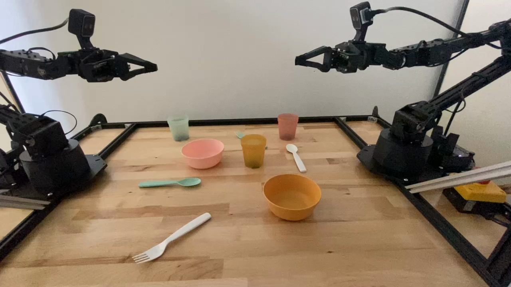
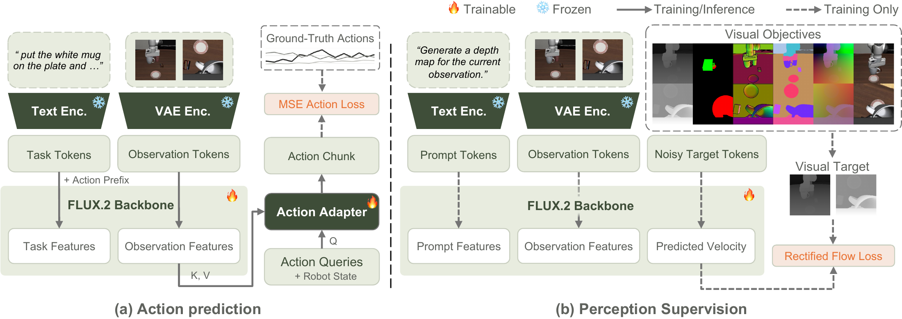

Direct action regression
The backbone combines camera observations with the task instruction. A 19M action adapter uses its visual features and the robot state to directly regress an action chunk.
GenPA adapts a pretrained image generator into an efficient robot policy, using its native image-editing interface to study diverse visual supervision within one architecture. Current-scene supervision supports effective control without requiring future visual prediction. At deployment, the policy directly regresses actions in a single backbone pass, achieving strong results on LIBERO, LIBERO-Plus, and RoboTwin 2.0 with 20.9 ms compiled inference per action chunk on an NVIDIA H100.

“Put the milk in the basket.”
“Estimate the depth of this scene.”
Separate action and perception forwards jointly update the shared backbone.
Image generators can depict goals and sketch motion. Can their visual knowledge also support direct robot control?

Editing promptShow the scene with the green spoon in the pink bowl and the white fork in the
yellow-orange bowl.
Edit this photograph to show the scene after the robot has put the green spoon into the pink bowl and the white fork into the yellow-orange bowl. Keep the other utensils, cups, bowls, background, and camera view unchanged. Each moved object must appear exactly once. Return only the edited scene.
Illustrative edits generated with GPT Image 2, as documented in the paper; these are not GenPA predictions or robot execution results. Both use the same frame from the Random Kitchen video by ALOHA Unleashed. Displayed editing requests are abbreviated; full prompts follow the paper’s Generation Details for Figure 1 appendix.
This leads to our question: how can we turn an image generator’s visual knowledge into a policy, and use its native visual interface to study what supervision helps control?
GenPA reuses FLUX.2 klein Base 4B’s native image-editing interface for diverse visual supervision within one policy architecture. Visual and action objectives jointly train the shared backbone for direct action regression.

The backbone combines camera observations with the task instruction. A 19M action adapter uses its visual features and the robot state to directly regress an action chunk.
A separate visual forward reuses the generator’s native objective, without task-specific perception heads. Both losses update the shared backbone.
Only the action path runs at deployment: one backbone forward, with no image generation or iterative action denoising.
Distance from the camera
Surface orientation
3D position in the robot frame
Semantic parts of the scene
The object and its goal
Scene after 16 action steps
Geometry of the future scene
LIBERO demonstration · Task: “Pick up the milk and place it in the basket.”
Showing RGB observations from the agent view.
A common architecture for visual supervision. The same policy architecture and native visual objective let us compare current-scene perception, future prediction, and their combinations. Current-scene supervision supports effective control in our experiments, without requiring future visual prediction.
Evaluated across tabletop manipulation, visual perturbations, and bimanual tasks, with inference measured on an NVIDIA H100.
Checkpoint-selection score
LIBERO-Plus83.79%Clean-Instruction · no fine-tuning
RoboTwin 2.091.45%Clean + Randomized average
Inference on H10020.94msCompiled · per action chunk
GenPA reports checkpoint-selection results from 2,000 episodes across 40 tasks. Baseline scores are from published reports.
| Method | Average | Spatial | Object | Goal | Long |
|---|---|---|---|---|---|
| ABot-M0.5* | 99.40 | 100.00 | 99.80 | 99.40 | 98.40 |
| GenPA | 99.10 | 99.40 | 99.80 | 98.80 | 98.40 |
| Qwen-RobotManip* | 99.10 | — | — | — | — |
| SimVLA | 98.60 | 99.60 | 99.80 | 98.60 | 96.40 |
| LaWAM* | 98.60 | 99.40 | 99.60 | 98.40 | 97.00 |
| VLA-Adapter-Pro | 98.50 | 99.60 | 99.60 | 98.20 | 96.40 |
| Cosmos Policy | 98.50 | 98.10 | 100.00 | 98.20 | 97.60 |
| ImageWAM-4B | 98.40 | 97.20 | 99.20 | 98.80 | 98.40 |
| Fast-WAM | 97.60 | 98.20 | 100.00 | 97.00 | 95.20 |
| VLANeXt | 97.40 | 99.00 | 99.20 | 96.60 | 94.80 |
| π₀.₅* | 96.85 | 98.80 | 98.20 | 98.00 | 92.40 |
| OpenVLA-OFT* | 96.80 | 97.70 | 98.00 | 96.10 | 95.30 |
All policies are re-evaluated on 10,030 instances under What is Clean-Instruction?Removes perturbation identifiers appended to non-language instructions. Intended language perturbations are preserved.. GenPA uses its LIBERO checkpoint without additional fine-tuning.
| Method | Overall | Camera | Robot init. | Language | Lighting | Background | Noise | Layout |
|---|---|---|---|---|---|---|---|---|
| π₀.₅* | 85.90 | 72.23 | 79.61 | 86.21 | 96.67 | 96.47 | 89.76 | 86.75 |
| Cosmos Policy | 85.60 | 80.24 | 64.97 | 88.29 | 99.12 | 88.85 | 95.07 | 87.15 |
| GenPA | 83.79 | 81.80 | 67.94 | 84.97 | 97.99 | 82.43 | 92.88 | 81.57 |
| VLANeXt | 83.60 | 89.49 | 62.77 | 79.18 | 95.10 | 89.22 | 95.57 | 77.90 |
| ImageWAM | 82.13 | 79.36 | 50.19 | 91.28 | 97.55 | 88.48 | 95.19 | 78.56 |
| OpenVLA-OFT* | 71.75 | 64.73 | 28.32 | 87.12 | 95.36 | 89.59 | 76.83 | 72.20 |
| Fast-WAM | 70.22 | 46.40 | 72.39 | 67.86 | 97.11 | 66.91 | 69.52 | 78.30 |
GenPA is evaluated on 50 bimanual tasks, with 5,000 trials each in Clean and Randomized settings. Baseline scores are from published reports.
| Method | Average | Clean | Randomized |
|---|---|---|---|
| ImageWAM | 93.38 | 93.20 | 93.56 |
| Qwen-RobotManip* | 93.00 | 93.40 | 92.50 |
| Fast-WAM | 91.83 | 91.88 | 91.78 |
| GenPA | 91.45 | 92.08 | 90.82 |
| Motus* | 87.84 | 88.66 | 87.02 |
| π₀.₅* | 79.75 | 82.74 | 76.76 |
Lightweight visual encoding and reusable language features reduce per-observation work. GenPA combines this with a single backbone pass and direct action regression.
NVIDIA H100 · batch 1 · milliseconds per action chunk
Hover or tap a segment for its latency; choose a policy for details. Black ticks mark independently timed totals. Components come from a separate profiling pass and are not rescaled.
16-action chunk · text features cached
27.86 ± 0.32 ms
Action covers the complete regression adapter within a full policy call.
Why image generators can be efficient. The evaluated VLM policies extract high-level visual features before multimodal reasoning. GenPA compresses observations with a lightweight VAE and performs conditional visual modeling in its backbone. Images change continuously, while instructions usually remain fixed; independently encoded language features can therefore be reused across policy calls. GenPA then reads out actions directly, avoiding iterative decoding.
Compare What are visual targets?Training reuses the image generator’s native image-editing interface, with depth maps, normals, segmentation maps, or future images as supervised outputs. This visual loss also trains the action policy’s backbone.See the visual targets with What is action-only training?The policy is trained with action supervision alone, without a visual-supervision objective. training in a controlled study of supervision.
Bars show changes in success rate, not absolute scores. Zero is the action-only baseline for each perturbation category.
Unlike the benchmark training setup, these ablations omit random image augmentation and resizing to avoid unequal effects across visual targets.
Current depth raises LIBERO-Plus success from 70.87% to 76.69% in this study, with gains in every perturbation category.
Future RGB also improves control (77.10%). Current-scene supervision offers an effective route without a future-prediction objective.
Depth + segmentation scores below either alone. Depth + future RGB reaches 77.42%, just 0.32 points above future RGB alone.
USB transfer on a real robot, shown at original speed.
@misc{deng2026genpa,
title = {{GenPA}: Image Generators as Efficient Robot Policies},
author = {Deng, Zian and Zhang, Tianyi and Zheng, Zilong and Liu, Ziyu
and Zhang, Tao and Lyu, Yao and Li, Shengbo Eben},
year = {2026},
eprint = {2611.27446},
archivePrefix = {arXiv},
primaryClass = {cs.RO},
url = {https://arxiv.org/abs/2611.27446}
}Read the paper, run a checkpoint, or explore the visual targets used for training.